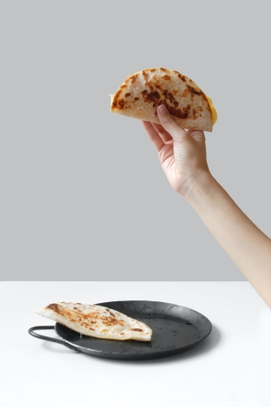

Ingredients:
1 tortilla
1/4 cup Grated Cheese
Your favorite salsa (optional)
Cooking Instructions
1. Put the tortilla in the frying pan
2. Sprinkle all of the grated cheese onto half of the tortilla, then
fold it over
3. Heat the tortilla over medium heat on the stove, flipping until
the cheese is melted
4. Enjoy plain or with your favorite salsa

Spaghetti
Ingredients:
1/4 lb. Spaghetti Noodles
1 jar Spaghetti Sauce
Water
Cooking Instructions
1. Pour some water into a small pot and heat until boiling
2. Put the spaghetti noodles into the pot at a medium-high heat for
8-10 minutes until fully cooked
3. Heat the sauce in a saucepan until warm
4. Put the noodles and sauce together and enjoy
Baked Potatoes
Ingredients:
2 Potatoes
1 Tbsp Olive Oil
1/2 Tsp Salt
2 Tbsp Butter
1/4 cup Cheese
Bacon (optional)
Green Onions (optional)
Cooking Instructions
1. Mix the potatoes, olive oil, and salt together in a bowl until the
potatoes are coated
2. Bake the potatoes at 400 degrees for 45 minutes
3. Open the potatoes, butter the insides, and cover with cheese
4. Enjoy as is, or sprinkle with green onions and bacon for extra
flavor